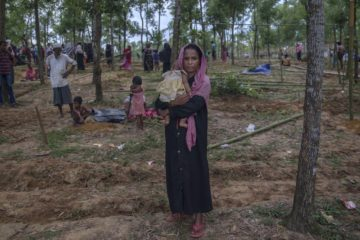
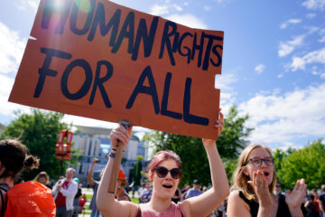
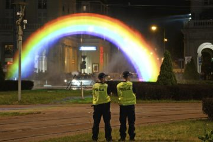
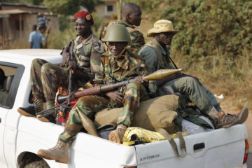
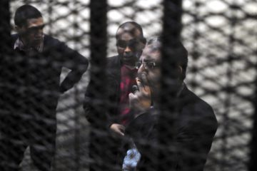

GLOBAL JOURNALIST
Latest Stories
-
Telling international stories that matter, and the stories of the people who cover them.

"They want justice, and that has never been provided for them." The wholesale flight of much of Myanmar's Rohingya minority since last year has...

Populist rise forces rights activist to change views
"I began to worry that we are just preaching to ourselves." For human rights advocates in Europe, there's been much to lament in the...

Poland gay rights group sees rising hate
"It’s hard to work in an environment where you see the basis of democracy deteriorating." Earlier this year, gay rights activists unveiled a large...

Central African journalist sees light for war-torn nation
The data on the Central African Republic can be daunting. The country ranks dead last on the U.N.'s most recent Human Development Index, which...
Iranian student journalist fled after detention
Omid Rezaee’s work on a university magazine led to his arrest In 2009, incumbent president Mahmoud Ahmadinejad won Iran’s disputed election...

Project Exile: ‘Caged’ Egyptian journalist fled before sentencing
"We have to stand up for each other, otherwise the whole profession is in jeopardy.” Yehia Ghanem had been near the pinnacle of Egyptian...

Turkish editor departs after police raid
"I realize it was the best decision of my life because I would be imprisoned right now, like my colleagues." Shortly after Turkish police in riot...